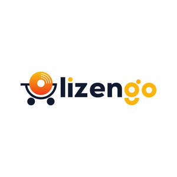

Trade Mark Journal No.2025/018 2 May 2025
UK00004162949 20 February 2025 (9)

- Class 9
- Software; Software testing software; Software reliability software; Computer software; Collaboration software platforms [software]; Computer software packages; Antivirus software; Software for computers; Enterprise software; Antispyware software; Computer software development tools; Plugin software; Multimedia software; Workflow software; System software; Computer software applications; Antimalware software; Software applications; Programming software; Debugging software; Bioinformatics software; Computer antivirus software; Computer application software; Computer software for computer aided software engineering; Downloadable computer software; Compiler software; Software compiler; Computer software platforms; Application software; Encryption software; Serverside software; Networking software; Computer e-commerce software; Computer software programs; Hardware testing software; Graphics software; Interface software; Telecommunications software; Computer software for encryption; E-commerce software; Computer telephony software; Downloadable software; Server software; Computer software applications, downloadable; Downloadable computer software applications; Simulation software; Computer programming software; Editing software; Computer interface software; Computer hardware for use in computer-assisted software engineering; Business software; Platform software; Cryptography software; Operating software; Accounting software; Downloadable computer security software; Programs (Computer -) [downloadable software]; Computer programs [downloadable software]; Computer operating software; Smartphone software; Software suites; Publishing software; Gaming software; Computer firewall software; Intranet software; Embedded software; Downloadable computer utility software; Security software; Computer software for advertising; Optimisation software; Downloadable computer software for blockchain technology; Computer graphics software; Educational computer software; Hardware reliability software; Music software; Software development tools; Mobile software; Utility software; Diagramming software; Computer software [programmes]; Manufacturing software; Communications software; CAD software; Software for smartphones; Testing software; Animation software; Biometric software; Computer software for database management; Computer game software; Downloadable software applications; Business technology software; Downloadable computer software for the management of data; Electronic device software drivers that allow computer hardware and electronic devices to communicate with each other; Digital cameras; Digital signage; Digital multimeters; Digital multi-meters; Digital televisions; Digital recordings; Analogue to digital converters; Digital to analogue converters; Digital recording media; Digital projectors; Digital sensors; Digital radios; Digital phones; Digital amplifiers; Digital potentiometers; Digital electronic controllers; Electronic digital signboards; Digital telephones; Digital transmitters; Digital tablets; Digital notepads; Portable digital electronic scales; Downloadable digital music; Digital audio recorders; Digital data recording media; Digital storage media; Digital video cameras; Digital plotters; Digital video recorders; Audio digital discs; Digital graphic scanners; Computer digital maps; Digital boards; Digital music downloadable from the Internet; Downloadable digital assets; Digital audio servers; Programmable digital television recorders; Compact digital cameras; Digital video discs; Digital media streaming devices; Downloadable digital photos; Digital audio tapes; Audio digital tapes; Digital indicators; Digital signs; Blank digital recording media; Digital still cameras; Digital colour printers; Digital sensory devices; Digital audio players; Digital books downloadable from the Internet; Digital colour copiers; Digital color printers; Digital signage monitors; Digital cameras for industrial use; Digital video servers; Wearable digital electronic communication devices; Digital voice recorders; Digital video players; Digital organizers; Computer software for the display of digital media; Digital color copiers; Digital telephone platforms and software; Digital dashboard software; Digital music players; DMB (Digital Multimedia Broadcasting) televisions; Blank digital storage media; Digital signal processors; Software for processing digital images; Digital video disc recorders; Digital telecommunications apparatus; Personal digital assistants; Downloadable computer software for use as a digital wallet; Digital colour printers for documents; Blank digital audio tapes; Digital sound processors; Digital audio tape recorders; Gauges with digital readout; Portable digital audio broadcasting radios; Digital photo frames; Digital audio tape players; Electric mobile digital communication devices; Covers for digital media players; Computer software for use on handheld mobile digital electronic devices and other consumer electronics; Digital audio interface apparatus; Software related to handheld digital electronic devices; Digital set-top boxes; Digital mixing desks; Digital music downloadable provided from the internet; Computer software for processing digital images; Programmable digital read-out units; Digital versatile discs; Digital cellular phones; Digital video disc players; Prerecorded digital audio tapes; Digital versatile disc recorders; CAE software; USB operating software; Computer application software for TV; 3D computer graphics software; Office software; Software for tablet computers; Computer software downloaded from the internet; Computer software downloadable from the internet; AI software; Downloadable computer software for use as an application programming interface (API); Computer application software for use in implementing the Internet of Things [IoT]; Desktop publishing software; Computer software for use as an application programming interface (API); Application software for smart TV; Media server software; Computer gaming software; Software downloadable from the internet; Games software for use with computers; BIOS software; Computer software for document management; Email software; Mail server software; Computer games programs downloaded via the internet [software]; File server software; Extranet software; Cloud server software; Computer games software; 3D animation software; Office suites [software]; Downloadable cloud computing software; Computer game software downloadable from a global computer network; GPS software; Computer software downloadable from global computer networks; Downloadable computer game software; Computer game software, downloadable; Computer software for the creation of firewalls; Web server software; Netbook computers; Computer whiteboard software; E-mail software; Computer software programs for spreadsheet management; Customer relation management [CRM] software; Downloadable email software; Print server software; Software development kit [SDK]; Enterprise application software [EAS]; Downloadable computer game software via a global computer network and wireless devices; Computer software for mobile phones; Computer software for education; Proxy server software; Computer software for the administration of on-line games and gaming; Computer groupware; Cloud computing software; Media software; Computer software supplied on the Internet; Computer software supplied from the Internet; Computer software downloadable from global computer information networks; Computer application software for mobile phones; Enterprise content management [ECM] software; Computer games programmes downloaded via the internet [software]; PDAs; Search marketing software; Desktop computers; USB web keys; Computer software for entertainment; Add-in cards for micro computers; Downloadable computer software for the management of information; Operating computer software for main frame computers; File management software; Global positioning system [GPS] computer software; Downloadable application software for smart phones; Computer programs and software for image processing used for mobile phones.
ecokeys LLC